泰佛寺（ワットチャヤマンカララーム）
ThaiBuddhistTemple(WatChayamangkalaram);Penang
ペナン島の中心地ジョージタウンからバツーフェリンギへ向かう途中、屋台で有名なガーニードライブの近くにやけに派手な塔が見える。
その金色ベースに所々赤く縁取りされた塔はミャンマーのパゴダのようでもあるが、妙なチープ具合が逆に興味そそりまくり。
仏塔というより大宮のロケットビルに近い魂を備えているとお見受けした。
この寺は泰佛寺、正式にはワットチャヤマンカララーム、通称寝釈迦仏寺院、英語表記はThaiBuddistTempleと様々な名前を持った寺である。
ま、屋台の飯屋の看板ひとつ取ってもマレー語英語中国語が入り乱れるこの国ではさして珍しくもない事みたいですけど。
つまりタイ様式の仏教寺院なのである。
いきなりタイの美意識丸出しのド派手な門がお出向かえ。タイ仏教の三原色ともいえる青赤金の三色を惜し気もなく投入した力作である。
この門を潜った先には豪華絢爛なるタイ寺院の世界が繰り広げられている、筈。
門を潜ると正面に寝釈迦殿が現れる。入口は中央左右と三カ所あり、建物の前には日本でいうところの仁王様が立っている。
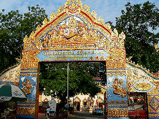 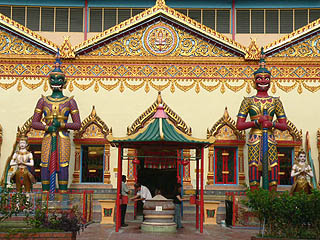
仁王様といっても忿怒相でクワッ！ってな事は無い。ここは南国のリゾート地、リラックスムード漂いまくり。
しかし頭上の人面センサーにより360度の視界を常に保つという超人技によって敵の侵攻を食い止めている（たぶん）。
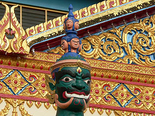 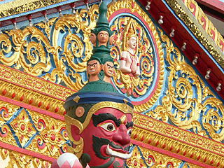
仁王様の両脇には4匹の龍がのたうちまわって雄叫びを上げている。横から見ると波がうねっているかのようだ。
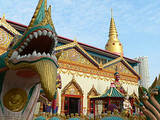 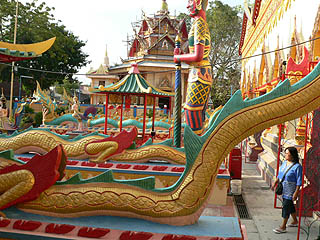
内部に入ると体育館のような堂内の中央にドーンと鎮座、じゃなくてゴローンと鎮寝している。
長さは33メートル。
世界で三番目に大きい寝釈迦像と寺側はコメントしているが、毎日牛乳飲まないと世界ランカーの道はまだまだ険しいですぞ。
寝釈迦の光背というのは珍しいように思える。1958年の作。
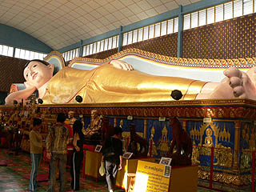 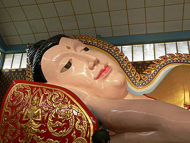
台座にはお釈迦様の一生を表したレリーフが一周している。青と赤と金のタイ仏教3原色がいかにもな色合わせだ。
堂内には多くの参拝者が来ていた。
その参拝者の多くが参拝しているのがここの偉いお坊さんのミイラ。
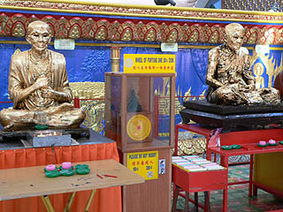
ミイラは2体あり、どちらもびっしり金箔が貼られているので原型が段々ふくらんで来ている。どうも様子を見ていると巨大寝釈迦よりミイラの方が人気があるように思える。ま、タイの仏教って徳の高いお坊さん自身が信仰の対象となっているようだ。そういえばタイやミャンマーの寺では高僧の精密な人形が飾ってあってびっくりする事もある。従って高僧のミイラなどといったら恰好の信仰対象物になってしまうのだ。
ある種、究極の一点モノのフィギュアといえるかもしれない。一方、巨大寝釈迦は大き過ぎて信仰対象としてリアリティがないのだろうか。
で、その2体のミイラの間にはタイ式おみくじマシンあって、みなさん結構占ってました。
本堂の側面壁には何故か10頭身のお方が。スタイル良過ぎでしょ。
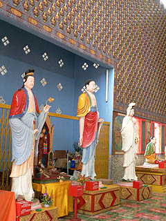
で、寝釈迦さんの裏にまわる。
寝釈迦の光背の裏には絵画が描かれていて、その下には遺骨がズラ〜っと並んでいた。
骨壷は華人のそれと同様、オシャレな壷だった。で、壁のほうには仏像が並んでいて、その後ろにも骨壷がビッシリ並んでいた。
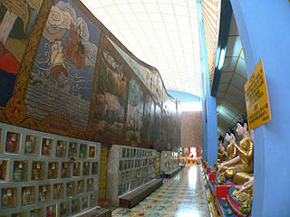 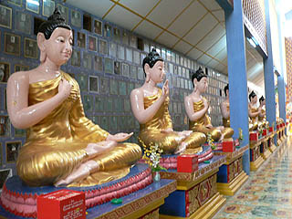
寝釈迦さんのお尻の辺りに入口があり、中を見るとそこも納骨堂になっていた。
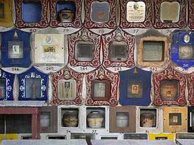
正面の明るい雰囲気と胎内の薄暗い納骨堂、強烈なコントラストを示している。
寝釈迦といえばハイライトは脚の裏、しかしここの寝釈迦さんの足の裏はいたってシンプルであった。
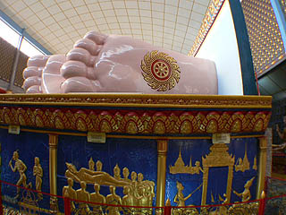
やっぱ、バンコクのワットポーみたいなナイキのスニーカーもビックリの足の裏模様の方がカッコいいですね。
戸や窓の透かし模様も凝っている。コレ好きなんですよねえ〜。
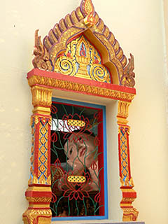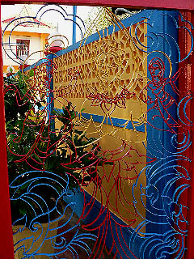
龍の尻尾を呑み込む獅子？龍の胴が金色！
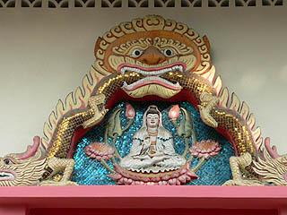
そんなこんなで注目の金の仏塔。
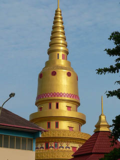 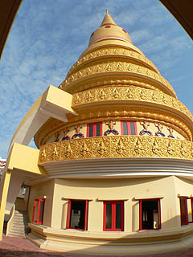
1階はガラーンとしたホールの真ん中にぽつんと仏像が置いてあった。
塔の外側に階段が付いていてそこから2階3階に行けるようになっていた。が、階段は扉があってふさがれていて上には行けなかった。
外から見る限り7層程度のようだが、途中窓のない部分もあるので吹き抜けだったりする可能性もあるかもしれない。
う〜む、登りたかったぜ。
次のスポットへGO！
馬来半島珍寺伝説
珍寺大道場 HOME